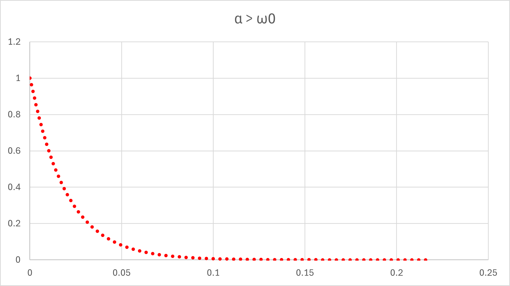

１７ー２．ステップ関数（RLC回路），初期条件，特に，微分を0としてみる
・α >ω0
ここに記したように，
平方根内が実数となるので，
\(\Large \displaystyle \sqrt{ \alpha^2 - \omega_0^2} = \omega\)
とします．電流は，
\(\Large \displaystyle I(t) = e^{- \alpha t} \cdot \left[ A \cdot e^{ \omega t} + B \cdot e^{-\omega t} \right]\)
\(\Large \displaystyle I(0) = A + B = I_0 \)
\(\Large \displaystyle I'(t) = - \alpha \ e^{- \alpha t} \cdot \left[ A \cdot e^{ \omega t} + B \cdot e^{-\omega t} \right]+ e^{- \alpha t} \cdot \left[ A \ \omega \cdot e^{ \omega t} - B \ \omega \cdot e^{-\omega t} \right]\)
\(\Large \displaystyle I'(0) = - \alpha \cdot \left[ A + B \right]+ \omega \left[ A - B \right] = 0\)
\(\Large \displaystyle A + B = I_0 \)
\(\Large \displaystyle A-B = \frac{ \alpha}{\omega } \ I_0 \)
\(\Large \displaystyle A=\frac{ \omega + \alpha }{2\omega } \ I_0 \)
\(\Large \displaystyle B=\frac{ \omega - \alpha }{2\omega } \ I_0 \)
\(\Large \displaystyle I(t) = e^{- \alpha t} \cdot \left[ A \cdot e^{ \omega t} + B \cdot e^{-\omega t} \right]\)
\(\Large \displaystyle = e^{- \alpha t} \cdot \left[ \frac{ \omega + \alpha }{2\omega } \ I_0 \cdot e^{ \omega t} + \frac{ \omega - \alpha }{2\omega } \ I_0 \cdot e^{-\omega t} \right]\)
\(\Large \displaystyle = \frac{ 1 }{2\omega } \ I_0 \ e^{- \alpha t} \cdot \left[ ( \omega + \alpha ) \cdot e^{ \omega t} + ( \omega - \alpha ) \cdot e^{-\omega t} \right]\)
\(\Large \displaystyle = \frac{ 1 }{2\omega } \ I_0 \ e^{- \alpha t} \cdot \left[ \omega \cdot ( e^{ \omega t} + e^{-\omega t}) + \alpha \cdot ( e^{ \omega t} - e^{-\omega t}) \right]\)
\(\Large \displaystyle = \ I_0 \ e^{- \alpha t} \cdot \left[ cosh \ ( \omega t) + \frac{\alpha}{ \omega} \cdot sinh \ ( \omega t ) \right]\)
よく言われる双曲線関数となります．．
実際に，エクセル，でシミュレートしてみましょう．
V0 : 1 V
R : 10 Ω
L : 0.002 H
C : 0.002 F
とすると，
\(\Large \displaystyle \omega_0 = \frac{1}{\sqrt{0.002 \times 0.002} } = 500 \ (1/s) \)
\(\Large \displaystyle \alpha \equiv \frac{10}{2 \times 0.002} = 2500 \ (1/s) \)
となり，α > ω0，の条件となります．
\(\Large \displaystyle \omega = \sqrt{ \alpha^2 - \omega_0^2 } = 2449.49 (rad/s) = 389.8 Hz \)
となり，

と指数減衰っぽく，見えます．
つぎは，α =ω0，です．